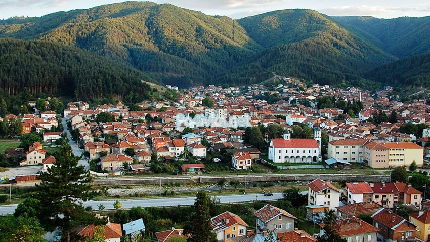
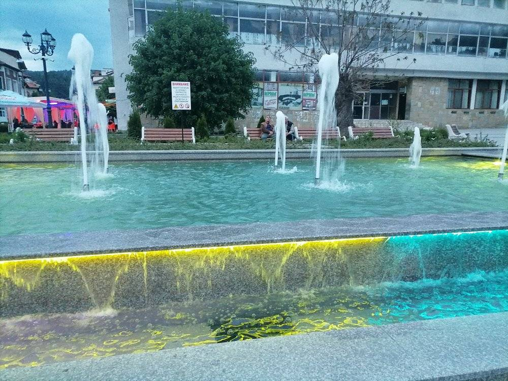
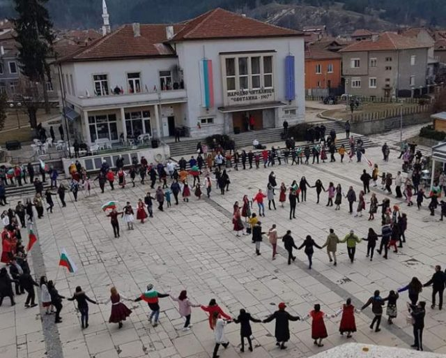
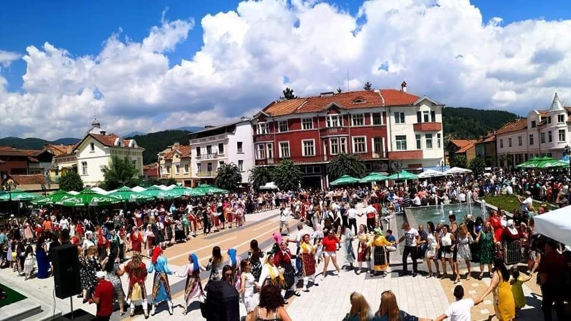

Якоруда - това е едно красиво градче, сгушено в пазвите между планините Рила и Родопите. Якоруда има уникален фолклор, местна култура и традиции, които хората все още обичат, спазват и предават на децата си. Тук битуват три етноса – християни, мюсюлмани и роми. Всички те заедно отбелязват празниците си, помагат си и уважават различията си.
   